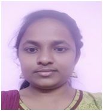

Ms.L.Saritha
Lecturer
Department of Statistics
MJPTBCW RESIDENTIAL DEGREE COLLEGE FOR WOMEN
Teaching
Is a faculty member in Department of Statistics.
She holds a Master's Degree in Statistics from University College of Science ,Osmania University.
She has an experience of 2years in teaching at under graduate level in this Institution.